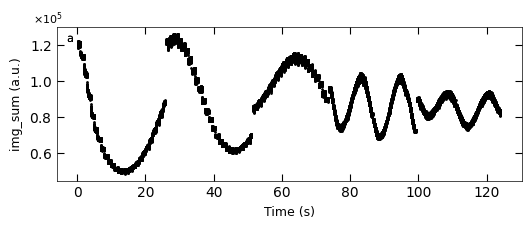
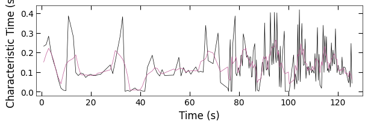
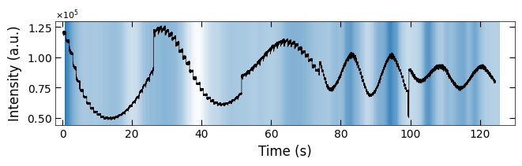
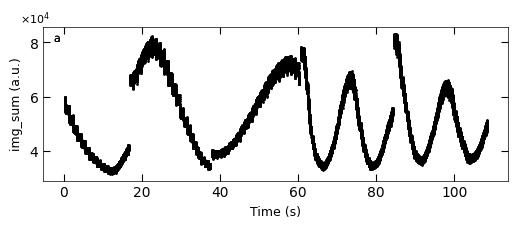
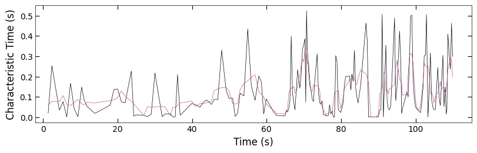
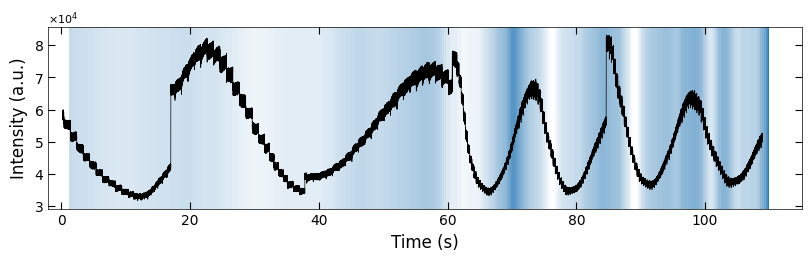
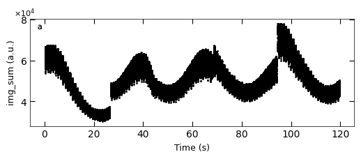
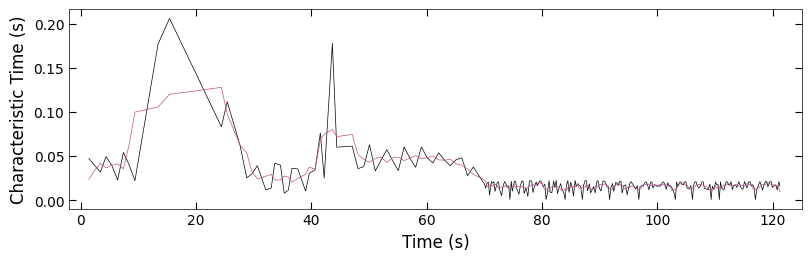
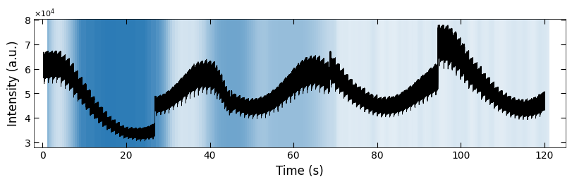

Characteristic Time with Details#
%load_ext autoreload
%autoreload 2
import numpy as np
import matplotlib.pyplot as plt
from matplotlib import colors
import seaborn as sns
from viz.style import set_style
from viz.printing import printer
from viz.layout import layout_fig
from sto_rheed.Dataset import RHEED_parameter_dataset
from sto_rheed.Viz import Viz
from sto_rheed.Analysis import analyze_curves, remove_outlier, smooth
from sto_rheed.Packed_functions import visualize_characteristic_time, violinplot_characteristic_time
from sto_rheed.Fit import NormalizeData
printing = printer(basepath = '../Figures/4.Characteristic_time/')
printing_plot = printer(basepath = '../Figures/4.Characteristic_time/', fileformats=['png', 'svg'])
set_style("printing")
seq_colors = ['#00429d','#2e59a8','#4771b2','#5d8abd','#73a2c6','#8abccf','#a5d5d8','#c5eddf','#ffffe0']
bgc1, bgc2 = colors.hex2color(seq_colors[0]), colors.hex2color(seq_colors[5])
color_blue = (44/255,123/255,182/255)
color_orange = (217/255,95/255,2/255)
color_purple = (117/255,112/255,179/255)
printing set for seaborn
1. Examples of Fitted RHEED Intenstity Curve#
spot = 'spot_2'
metric = 'img_sum'
camera_freq = 500
fit_settings = {'savgol_window_order': (15, 3), 'pca_component': 10, 'I_diff': 15000,
'unify':False, 'bounds':[0.001, 1], 'p_init':[0.1, 0.4, 0.1]}
2. Analyze the Decay Curve#
2.1 Sample 1 - treated_213nm#
2.1.1 Fitting Process#
path = 'D:/STO_STO-Data/RHEED/STO_STO_Berkeley/test6_gaussian_fit_parameters_all-04232023.h5'
D1_para = RHEED_parameter_dataset(path, camera_freq=500, sample_name='treated_213nm')
growth_list = ['growth_1', 'growth_2', 'growth_3', 'growth_4', 'growth_5']
D1_para.viz_RHEED_parameter_trend(growth_list, spot='spot_2', metric_list=['img_sum'], head_tail=(100,300), interval=200)

Gaussian fitted parameters in time: Fig. a: maximum intensity of original cropped RHEED spot, b: maximum intensity of resonstructed cropped RHEED spot, c: spot center in spot x coordinate, d: spot center in y coordinate, e: spot width in x coordinate, f: spot width in y coordinate.
growth_dict = {'growth_1':1, 'growth_2':1, 'growth_3':1, 'growth_4':3, 'growth_5':3}
x_all, y_all = D1_para.load_multiple_curves(growth_dict.keys(), spot, metric, x_start=0, interval=0)
parameters_all, x_coor_all, info = analyze_curves(D1_para, growth_dict, spot, metric, interval=0, fit_settings=fit_settings)
[xs_all, ys_all, ys_fit_all, ys_nor_all, ys_nor_fit_all, ys_nor_fit_failed_all, labels_all, losses_all] = info
# define two color regime
x_y1 = x_coor_all[losses_all[:,0]>losses_all[:,1]]
x_y2 = x_coor_all[losses_all[:,0]<losses_all[:,1]]
color_array = Viz.two_color_array(x_coor_all, x_y1, x_y2, bgc1, bgc2, transparency=0.5)
color_array = np.concatenate([np.expand_dims(x_coor_all, 1), color_array], axis=1)
Viz.plot_fit_details(xs_all, ys_nor_all, ys_nor_fit_all, ys_nor_fit_failed_all, labels=range(len(x_all)),
save_name='S10-fitting_details_treated_213nm', printing=printing_plot)
c:\users\yig319\lehigh university dropbox\yichen guo\predicting-pulsed-laser-deposition-srtio3-homoepitaxy-growth-dynamics-using-rheed\src\sto_rheed\Viz.py:565: UserWarning: The figure layout has changed to tight
plt.tight_layout(pad=-0.5, w_pad=-1, h_pad=-0.5)
../Figures/4.Characteristic_time/S10-fitting_details_treated_213nm-1.png
../Figures/4.Characteristic_time/S10-fitting_details_treated_213nm-1.svg
../Figures/4.Characteristic_time/S10-fitting_details_treated_213nm-2.png
../Figures/4.Characteristic_time/S10-fitting_details_treated_213nm-2.svg
../Figures/4.Characteristic_time/S10-fitting_details_treated_213nm-3.png
../Figures/4.Characteristic_time/S10-fitting_details_treated_213nm-3.svg
../Figures/4.Characteristic_time/S10-fitting_details_treated_213nm-4.png
../Figures/4.Characteristic_time/S10-fitting_details_treated_213nm-4.svg
2.1.2 Fitted parameters#
fig, axes = layout_fig(4, 1, figsize=(6.5, 2*4))
Viz.plot_curve(axes[0], x_all, y_all, plot_type='lineplot', xlabel='Time (s)', ylabel='Intensity (a.u.)', xlim=(-2, 130), yaxis_style='sci')
Viz.plot_curve(axes[1], x_coor_all, parameters_all[:,0], plot_type='lineplot', xlabel='Time (s)', ylabel='Fitted a (a.u.)', xlim=(-2, 130))
Viz.plot_curve(axes[2], x_coor_all, parameters_all[:,1], plot_type='lineplot', xlabel='Time (s)', ylabel='Fitted b (a.u.)', xlim=(-2, 130))
Viz.plot_curve(axes[3], x_coor_all, parameters_all[:,2], plot_type='lineplot', xlabel='Time (s)', ylabel='Characteristic Time (s)', xlim=(-2, 130))
printing_plot.savefig(fig, 'S7-treated_213nm-a_b_tau')
plt.show()
../Figures/4.Characteristic_time/S7-treated_213nm-a_b_tau.png
../Figures/4.Characteristic_time/S7-treated_213nm-a_b_tau.svg
2.1.3 Remove Outliers#
Because there is hard boundary when characteristic >= 1, so we can assume the characteristic data that >= 0.95 are outliers and remove from plot. And we also process the data with less noise to observe the trend.
x_coor_all_clean, tau_clean = remove_outlier(x_coor_all, parameters_all[:,2], 0.95)
tau_smooth = smooth(tau_clean, 5)
x_coor_all_clean_sample1 = np.copy(x_coor_all_clean)
tau_clean_sample1 = np.copy(tau_clean)
tau_smooth_sample1 = np.copy(tau_smooth)
fig, ax = plt.subplots(1, 1, figsize=(6, 2), layout='compressed')
Viz.plot_curve(ax, x_coor_all_clean_sample1, tau_clean_sample1, curve_y_fit=tau_smooth_sample1, plot_type='lineplot',
plot_colors=['k', '#bc5090'], xlabel='Time (s)', ylabel='Characteristic Time (s)',
yaxis_style='linear', markersize=3, xlim=(-2, 130))
plt.show()

2.1.4 Plot with Background#
x_coor_all_clean, tau_clean = remove_outlier(x_coor_all, parameters_all[:,2], 0.95)
tau_smooth = smooth(tau_clean, 3)
x_FineStep, colors_all = Viz.make_fine_step(x_coor_all_clean, tau_smooth, step=2, color=color_blue, saturation=1, savgol_filter_level=(15, 3))
color_array = np.concatenate([np.expand_dims(x_FineStep, 1), colors_all], axis=1)
x_all_sample1 = np.copy(x_all)
y_all_sample1 = np.copy(y_all)
color_array_sample1 = np.copy(color_array)
fig, ax = plt.subplots(1, 1, figsize=(6.5, 2), layout='compressed')
Viz.draw_background_colors(ax, color_array_sample1)
ax.plot(x_all_sample1, y_all_sample1, color='k')
Viz.set_labels(ax, xlabel='Time (s)', ylabel='Intensity (a.u.)', title=None, xlim=(-2, 130))
plt.show()

np.save('../Data/Plume_results/treated_213nm-fitting_results(sklearn).npy', np.concatenate([np.expand_dims(x_coor_all, 1), parameters_all], axis=1))
np.save('../Data/Plume_results/treated_213nm-bg_tau.npy', color_array_sample1)
2.2 Sample 2 - treated_81nm#
2.2.1 Fitting process#
path = 'D:/STO_STO-Data/RHEED/STO_STO_Berkeley/test7_gaussian_fit_parameters_all-04232023.h5'
D2_para = RHEED_parameter_dataset(path, camera_freq=500, sample_name='treated_81nm')
growth_list = ['growth_1', 'growth_2', 'growth_3', 'growth_4', 'growth_5']
D2_para.viz_RHEED_parameter_trend(growth_list, spot='spot_2', metric_list=['img_sum'], head_tail=(100,300), interval=200)

Gaussian fitted parameters in time: Fig. a: maximum intensity of original cropped RHEED spot, b: maximum intensity of resonstructed cropped RHEED spot, c: spot center in spot x coordinate, d: spot center in y coordinate, e: spot width in x coordinate, f: spot width in y coordinate.
growth_dict = {'growth_1':1, 'growth_2':1, 'growth_3':1, 'growth_4':3, 'growth_5':3}
x_all, y_all = D2_para.load_multiple_curves(growth_dict.keys(), spot, metric, x_start=0, interval=0)
parameters_all, x_coor_all, info = analyze_curves(D2_para, growth_dict, spot, metric, interval=0, fit_settings=fit_settings)
[xs_all, ys_all, ys_fit_all, ys_nor_all, ys_nor_fit_all, ys_nor_fit_failed_all, labels_all, losses_all] = info
# define two color regime
x_y1 = x_coor_all[losses_all[:,0]>losses_all[:,1]]
x_y2 = x_coor_all[losses_all[:,0]<losses_all[:,1]]
color_array = Viz.two_color_array(x_coor_all, x_y1, x_y2, bgc1, bgc2, transparency=0.5)
color_array = np.concatenate([np.expand_dims(x_coor_all, 1), color_array], axis=1)
Viz.plot_fit_details(xs_all, ys_nor_all, ys_nor_fit_all, ys_nor_fit_failed_all, labels=range(len(x_all)),
save_name='S11-fitting_details_treated_81nm', printing=printing_plot)
c:\users\yig319\lehigh university dropbox\yichen guo\predicting-pulsed-laser-deposition-srtio3-homoepitaxy-growth-dynamics-using-rheed\src\sto_rheed\Viz.py:565: UserWarning: The figure layout has changed to tight
plt.tight_layout(pad=-0.5, w_pad=-1, h_pad=-0.5)
../Figures/4.Characteristic_time/S11-fitting_details_treated_81nm-1.png
../Figures/4.Characteristic_time/S11-fitting_details_treated_81nm-1.svg
../Figures/4.Characteristic_time/S11-fitting_details_treated_81nm-2.png
../Figures/4.Characteristic_time/S11-fitting_details_treated_81nm-2.svg
../Figures/4.Characteristic_time/S11-fitting_details_treated_81nm-3.png
../Figures/4.Characteristic_time/S11-fitting_details_treated_81nm-3.svg
../Figures/4.Characteristic_time/S11-fitting_details_treated_81nm-4.png
../Figures/4.Characteristic_time/S11-fitting_details_treated_81nm-4.svg
2.2.2 Fitted parameters#
fig, axes = layout_fig(4, 1, figsize=(8, 10))
Viz.plot_curve(axes[0], x_all, y_all, plot_type='lineplot', xlabel='Time (s)', ylabel='Intensity (a.u.)', xlim=(-2, 115), yaxis_style='sci')
Viz.plot_curve(axes[1], x_coor_all, parameters_all[:,0], plot_type='lineplot', xlabel='Time (s)', ylabel='Fitted a (a.u.)', xlim=(-2, 115))
Viz.plot_curve(axes[2], x_coor_all, parameters_all[:,1], plot_type='lineplot', xlabel='Time (s)', ylabel='Fitted b (a.u.)', xlim=(-2, 115))
Viz.plot_curve(axes[3], x_coor_all, parameters_all[:,2], plot_type='lineplot', xlabel='Time (s)', ylabel='Characteristic Time (s)', xlim=(-2, 115))
printing_plot.savefig(fig, 'S8-treated_81nm-a_b_tau')
plt.show()
../Figures/4.Characteristic_time/S8-treated_81nm-a_b_tau.png
../Figures/4.Characteristic_time/S8-treated_81nm-a_b_tau.svg
2.2.3 Remove Outliers#
Because there is hard boundary when characteristic >= 1, so we can assume the characteristic data that >= 0.95 are outliers and remove from plot. And we also process the data with less noise to observe the trend.
x_coor_all_clean, tau_clean = remove_outlier(x_coor_all, parameters_all[:,2], 0.95)
tau_smooth = smooth(tau_clean, 5)
x_coor_all_clean_sample2 = np.copy(x_coor_all_clean)
tau_clean_sample2 = np.copy(tau_clean)
tau_smooth_sample2 = np.copy(tau_smooth)
fig, ax = plt.subplots(1, 1, figsize=(8, 2.5), layout='compressed')
Viz.plot_curve(ax, x_coor_all_clean_sample2, tau_clean_sample2, curve_y_fit=tau_smooth_sample2, plot_type='lineplot',
plot_colors=['k', '#bc5090'], xlabel='Time (s)', ylabel='Characteristic Time (s)',
yaxis_style='linear', markersize=3, xlim=(-2, 115))

2.2.4 Plot with Background#
x_coor_all_clean, tau_clean = remove_outlier(x_coor_all, parameters_all[:,2], 0.95)
tau_smooth = smooth(tau_clean, 3)
x_FineStep, colors_all = Viz.make_fine_step(x_coor_all_clean, tau_smooth, step=2, color=color_blue, saturation=1, savgol_filter_level=(15, 3))
color_array = np.concatenate([np.expand_dims(x_FineStep, 1), colors_all], axis=1)
x_all_sample2 = np.copy(x_all)
y_all_sample2 = np.copy(y_all)
color_array_sample2 = np.copy(color_array)
fig, ax = plt.subplots(1, 1, figsize=(8, 2.5), layout='compressed')
Viz.draw_background_colors(ax, color_array_sample2)
ax.plot(x_all_sample2, y_all_sample2, color='k')
Viz.set_labels(ax, xlabel='Time (s)', ylabel='Intensity (a.u.)', title=None, xlim=(-2, 115))
plt.show()

np.save('../Data/Plume_results/treated_81nm-fitting_results(sklearn).npy', np.concatenate([np.expand_dims(x_coor_all, 1), parameters_all], axis=1))
np.save('../Data/Plume_results/treated_81nm-bg_tau.npy', color_array_sample2)
2.3 Sample 3 - untreated_162nm#
2.3.1 Fitting Process#
path = 'D:/STO_STO-Data/RHEED/STO_STO_Berkeley/test9_gaussian_fit_parameters_all-04232023.h5'
D3_para = RHEED_parameter_dataset(path, camera_freq=500, sample_name='untreated_162nm')
growth_list = ['growth_1', 'growth_2', 'growth_3', 'growth_4', 'growth_5']
D3_para.viz_RHEED_parameter_trend(growth_list, spot='spot_2', metric_list=['img_sum'], head_tail=(100,300), interval=200)

Gaussian fitted parameters in time: Fig. a: maximum intensity of original cropped RHEED spot, b: maximum intensity of resonstructed cropped RHEED spot, c: spot center in spot x coordinate, d: spot center in y coordinate, e: spot width in x coordinate, f: spot width in y coordinate.
growth_dict = {'growth_1':1, 'growth_2':1, 'growth_3':1, 'growth_4':3, 'growth_5':3}
x_all, y_all = D3_para.load_multiple_curves(growth_dict.keys(), spot, metric, x_start=0, interval=0)
parameters_all, x_coor_all, info = analyze_curves(D3_para, growth_dict, spot, metric, interval=0, fit_settings=fit_settings)
[xs_all, ys_all, ys_fit_all, ys_nor_all, ys_nor_fit_all, ys_nor_fit_failed_all, labels_all, losses_all] = info
# define two color regime
x_y1 = x_coor_all[losses_all[:,0]>losses_all[:,1]]
x_y2 = x_coor_all[losses_all[:,0]<losses_all[:,1]]
color_array = Viz.two_color_array(x_coor_all, x_y1, x_y2, bgc1, bgc2, transparency=0.5)
color_array = np.concatenate([np.expand_dims(x_coor_all, 1), color_array], axis=1)
Viz.plot_fit_details(xs_all, ys_nor_all, ys_nor_fit_all, ys_nor_fit_failed_all, labels=range(len(x_all)),
save_name='S12-fitting_details_untreated_162nm', printing=printing_plot)
c:\users\yig319\lehigh university dropbox\yichen guo\predicting-pulsed-laser-deposition-srtio3-homoepitaxy-growth-dynamics-using-rheed\src\sto_rheed\Viz.py:565: UserWarning: The figure layout has changed to tight
plt.tight_layout(pad=-0.5, w_pad=-1, h_pad=-0.5)
../Figures/4.Characteristic_time/S12-fitting_details_untreated_162nm-1.png
../Figures/4.Characteristic_time/S12-fitting_details_untreated_162nm-1.svg
../Figures/4.Characteristic_time/S12-fitting_details_untreated_162nm-2.png
../Figures/4.Characteristic_time/S12-fitting_details_untreated_162nm-2.svg
../Figures/4.Characteristic_time/S12-fitting_details_untreated_162nm-3.png
../Figures/4.Characteristic_time/S12-fitting_details_untreated_162nm-3.svg
../Figures/4.Characteristic_time/S12-fitting_details_untreated_162nm-4.png
../Figures/4.Characteristic_time/S12-fitting_details_untreated_162nm-4.svg
---------------------------------------------------------------------------
KeyboardInterrupt Traceback (most recent call last)
Cell In[16], line 12
10 color_array = Viz.two_color_array(x_coor_all, x_y1, x_y2, bgc1, bgc2, transparency=0.5)
11 color_array = np.concatenate([np.expand_dims(x_coor_all, 1), color_array], axis=1)
---> 12 Viz.plot_fit_details(xs_all, ys_nor_all, ys_nor_fit_all, ys_nor_fit_failed_all, labels=range(len(x_all)),
13 save_name='S12-fitting_details_untreated_162nm', printing=printing_plot)
File c:\users\yig319\lehigh university dropbox\yichen guo\predicting-pulsed-laser-deposition-srtio3-homoepitaxy-growth-dynamics-using-rheed\src\sto_rheed\Viz.py:567, in Viz.plot_fit_details(x, y1, y2, y3, labels, figsize, mod, style, logscale, layout, save_name, printing)
565 plt.tight_layout(pad=-0.5, w_pad=-1, h_pad=-0.5)
566 if save_name:
--> 567 printing.savefig(fig, save_name+'-'+str(np+1))
568 plt.show()
569 else:
File c:\users\yig319\lehigh university dropbox\yichen guo\predicting-pulsed-laser-deposition-srtio3-homoepitaxy-growth-dynamics-using-rheed\src\viz\printing.py:40, in printer.savefig(self, fig, name, tight_layout, basepath, label_figs, **kwargs)
38 for fileformat in self.fileformats:
39 print(basepath + name + "." + fileformat)
---> 40 fig.savefig(
41 basepath + name + "." + fileformat,
42 dpi=self.dpi,
43 bbox_inches="tight",
44 )
File ~\Anaconda3\envs\RHEED\lib\site-packages\matplotlib\figure.py:3395, in Figure.savefig(self, fname, transparent, **kwargs)
3393 for ax in self.axes:
3394 _recursively_make_axes_transparent(stack, ax)
-> 3395 self.canvas.print_figure(fname, **kwargs)
File ~\Anaconda3\envs\RHEED\lib\site-packages\matplotlib\backend_bases.py:2204, in FigureCanvasBase.print_figure(self, filename, dpi, facecolor, edgecolor, orientation, format, bbox_inches, pad_inches, bbox_extra_artists, backend, **kwargs)
2200 try:
2201 # _get_renderer may change the figure dpi (as vector formats
2202 # force the figure dpi to 72), so we need to set it again here.
2203 with cbook._setattr_cm(self.figure, dpi=dpi):
-> 2204 result = print_method(
2205 filename,
2206 facecolor=facecolor,
2207 edgecolor=edgecolor,
2208 orientation=orientation,
2209 bbox_inches_restore=_bbox_inches_restore,
2210 **kwargs)
2211 finally:
2212 if bbox_inches and restore_bbox:
File ~\Anaconda3\envs\RHEED\lib\site-packages\matplotlib\backend_bases.py:2054, in FigureCanvasBase._switch_canvas_and_return_print_method.<locals>.<lambda>(*args, **kwargs)
2050 optional_kws = { # Passed by print_figure for other renderers.
2051 "dpi", "facecolor", "edgecolor", "orientation",
2052 "bbox_inches_restore"}
2053 skip = optional_kws - {*inspect.signature(meth).parameters}
-> 2054 print_method = functools.wraps(meth)(lambda *args, **kwargs: meth(
2055 *args, **{k: v for k, v in kwargs.items() if k not in skip}))
2056 else: # Let third-parties do as they see fit.
2057 print_method = meth
File ~\Anaconda3\envs\RHEED\lib\site-packages\matplotlib\backends\backend_svg.py:1339, in FigureCanvasSVG.print_svg(self, filename, bbox_inches_restore, metadata)
1334 w, h = width * 72, height * 72
1335 renderer = MixedModeRenderer(
1336 self.figure, width, height, dpi,
1337 RendererSVG(w, h, fh, image_dpi=dpi, metadata=metadata),
1338 bbox_inches_restore=bbox_inches_restore)
-> 1339 self.figure.draw(renderer)
1340 renderer.finalize()
File ~\Anaconda3\envs\RHEED\lib\site-packages\matplotlib\artist.py:95, in _finalize_rasterization.<locals>.draw_wrapper(artist, renderer, *args, **kwargs)
93 @wraps(draw)
94 def draw_wrapper(artist, renderer, *args, **kwargs):
---> 95 result = draw(artist, renderer, *args, **kwargs)
96 if renderer._rasterizing:
97 renderer.stop_rasterizing()
File ~\Anaconda3\envs\RHEED\lib\site-packages\matplotlib\artist.py:72, in allow_rasterization.<locals>.draw_wrapper(artist, renderer)
69 if artist.get_agg_filter() is not None:
70 renderer.start_filter()
---> 72 return draw(artist, renderer)
73 finally:
74 if artist.get_agg_filter() is not None:
File ~\Anaconda3\envs\RHEED\lib\site-packages\matplotlib\figure.py:3162, in Figure.draw(self, renderer)
3159 # ValueError can occur when resizing a window.
3161 self.patch.draw(renderer)
-> 3162 mimage._draw_list_compositing_images(
3163 renderer, self, artists, self.suppressComposite)
3165 renderer.close_group('figure')
3166 finally:
File ~\Anaconda3\envs\RHEED\lib\site-packages\matplotlib\image.py:132, in _draw_list_compositing_images(renderer, parent, artists, suppress_composite)
130 if not_composite or not has_images:
131 for a in artists:
--> 132 a.draw(renderer)
133 else:
134 # Composite any adjacent images together
135 image_group = []
File ~\Anaconda3\envs\RHEED\lib\site-packages\matplotlib\artist.py:72, in allow_rasterization.<locals>.draw_wrapper(artist, renderer)
69 if artist.get_agg_filter() is not None:
70 renderer.start_filter()
---> 72 return draw(artist, renderer)
73 finally:
74 if artist.get_agg_filter() is not None:
File ~\Anaconda3\envs\RHEED\lib\site-packages\matplotlib\axes\_base.py:3137, in _AxesBase.draw(self, renderer)
3134 if artists_rasterized:
3135 _draw_rasterized(self.figure, artists_rasterized, renderer)
-> 3137 mimage._draw_list_compositing_images(
3138 renderer, self, artists, self.figure.suppressComposite)
3140 renderer.close_group('axes')
3141 self.stale = False
File ~\Anaconda3\envs\RHEED\lib\site-packages\matplotlib\image.py:132, in _draw_list_compositing_images(renderer, parent, artists, suppress_composite)
130 if not_composite or not has_images:
131 for a in artists:
--> 132 a.draw(renderer)
133 else:
134 # Composite any adjacent images together
135 image_group = []
File ~\Anaconda3\envs\RHEED\lib\site-packages\matplotlib\artist.py:72, in allow_rasterization.<locals>.draw_wrapper(artist, renderer)
69 if artist.get_agg_filter() is not None:
70 renderer.start_filter()
---> 72 return draw(artist, renderer)
73 finally:
74 if artist.get_agg_filter() is not None:
File ~\Anaconda3\envs\RHEED\lib\site-packages\matplotlib\lines.py:872, in Line2D.draw(self, renderer)
869 else:
870 # Don't scale for pixels, and don't stroke them
871 marker_trans = marker_trans.scale(w)
--> 872 renderer.draw_markers(gc, marker_path, marker_trans,
873 subsampled, affine.frozen(),
874 fc_rgba)
876 alt_marker_path = marker.get_alt_path()
877 if alt_marker_path:
File ~\Anaconda3\envs\RHEED\lib\site-packages\matplotlib\backends\backend_svg.py:712, in RendererSVG.draw_markers(self, gc, marker_path, marker_trans, path, trans, rgbFace)
710 attrib['y'] = _short_float_fmt(y)
711 attrib['style'] = self._get_style(gc, rgbFace)
--> 712 writer.element('use', attrib=attrib)
713 writer.end('g')
File ~\Anaconda3\envs\RHEED\lib\site-packages\matplotlib\backends\backend_svg.py:241, in XMLWriter.element(self, tag, text, attrib, **extra)
235 def element(self, tag, text=None, attrib={}, **extra):
236 """
237 Add an entire element. This is the same as calling :meth:`start`,
238 :meth:`data`, and :meth:`end` in sequence. The *text* argument can be
239 omitted.
240 """
--> 241 self.start(tag, attrib, **extra)
242 if text:
243 self.data(text)
File ~\Anaconda3\envs\RHEED\lib\site-packages\matplotlib\backends\backend_svg.py:165, in XMLWriter.start(self, tag, attrib, **extra)
163 k = _escape_cdata(k)
164 v = _quote_escape_attrib(v)
--> 165 self.__write(f' {k}={v}')
166 self.__open = 1
167 return len(self.__tags) - 1
KeyboardInterrupt:
2.3.2 Fitted parameters#
fig, axes = layout_fig(4, 1, figsize=(8, 10))
Viz.plot_curve(axes[0], x_all, y_all, plot_type='lineplot', xlabel='Time (s)', ylabel='Intensity (a.u.)', xlim=(-2, 125), yaxis_style='sci')
Viz.plot_curve(axes[1], x_coor_all, parameters_all[:,0], plot_type='lineplot', xlabel='Time (s)', ylabel='Fitted a (a.u.)', xlim=(-2, 125))
Viz.plot_curve(axes[2], x_coor_all, parameters_all[:,1], plot_type='lineplot', xlabel='Time (s)', ylabel='Fitted b (a.u.)', xlim=(-2, 125))
Viz.plot_curve(axes[3], x_coor_all, parameters_all[:,2], plot_type='lineplot', xlabel='Time (s)', ylabel='Characteristic Time (s)', xlim=(-2, 125))
printing_plot.savefig(fig, 'S9-untreated_162nm-a_b_tau')
plt.show()
../Figures/4.Characteristic_time/S9-untreated_162nm-a_b_tau.png
../Figures/4.Characteristic_time/S9-untreated_162nm-a_b_tau.svg
2.3.3 Remove outliers#
Because there is hard boundary when characteristic >= 1, so we can assume the characteristic data that >= 0.95 are outliers and remove from plot. And we also process the data with less noise to observe the trend.
x_coor_all_clean, tau_clean = remove_outlier(x_coor_all, parameters_all[:,2], 0.95)
tau_smooth = smooth(tau_clean, 5)
x_coor_all_clean_sample3 = np.copy(x_coor_all_clean)
tau_clean_sample3 = np.copy(tau_clean)
tau_smooth_sample3 = np.copy(tau_smooth)
fig, ax = plt.subplots(1, 1, figsize=(8, 2.5), layout='compressed')
Viz.plot_curve(ax, x_coor_all_clean_sample3, tau_clean_sample3, curve_y_fit=tau_smooth_sample3, plot_type='lineplot',
plot_colors=['k', '#bc5090'], xlabel='Time (s)', ylabel='Characteristic Time (s)',
yaxis_style='linear', markersize=3, xlim=(-2, 125))

2.3.4 Plot with Background#
x_coor_all_clean, tau_clean = remove_outlier(x_coor_all, parameters_all[:,2], 0.95)
tau_smooth = smooth(tau_clean, 3)
x_FineStep, colors_all = Viz.make_fine_step(x_coor_all_clean, tau_smooth, step=2, color=color_blue, saturation=1, savgol_filter_level=(15, 3))
color_array = np.concatenate([np.expand_dims(x_FineStep, 1), colors_all], axis=1)
x_all_sample3 = np.copy(x_all)
y_all_sample3 = np.copy(y_all)
color_array_sample3 = np.copy(color_array)
fig, ax = plt.subplots(1, 1, figsize=(8, 2.5), layout='compressed')
Viz.draw_background_colors(ax, color_array_sample3)
ax.plot(x_all_sample3, y_all_sample3, color='k')
Viz.set_labels(ax, xlabel='Time (s)', ylabel='Intensity (a.u.)', title=None, xlim=(-2, 125))
plt.show()

np.save('../Data/Plume_results/untreated_162nm-fitting_results(sklearn).npy', np.concatenate([np.expand_dims(x_coor_all, 1), parameters_all], axis=1))
np.save('../Data/Plume_results/untreated_162nm-bg_tau.npy', color_array_sample3)
3. Summary of Figures#
3.1 Plots of Characteristic Times with RHEED intensity#
3.1.1 Sample 1 - treated_213nm#
x_all_sample1, y_all_sample1 = np.load('../Data/Plume_results/treated_213nm-x_all.npy'), np.load('../Data/Plume_results/treated_213nm-y_all.npy')
x_sklearn_sample1, tau_sklearn_sample1 = np.swapaxes(np.load('../Data/Plume_results/treated_213nm-fitting_results(sklearn).npy'), 0, 1)[[0, -1]]
bg_growth_sample1 = np.load('../Data/Plume_results/treated_213nm-bg_growth.npy')
bg_tau_sample1 = np.load('../Data/Plume_results/treated_213nm-bg_tau.npy')
y_all_sample1 = y_all_sample1[x_all_sample1<110]
x_all_sample1 = x_all_sample1[x_all_sample1<110]
tau_sklearn_sample1 = tau_sklearn_sample1[x_sklearn_sample1<110]
x_sklearn_sample1 = x_sklearn_sample1[x_sklearn_sample1<110]
bg_growth_sample1 = bg_growth_sample1[bg_growth_sample1[:, 0]<110]
x_sklearn_sample1, tau_clean_sample1 = remove_outlier(x_sklearn_sample1, tau_sklearn_sample1, 0.95)
tau_smooth_sample1 = smooth(tau_clean_sample1, 3)
fig, ax1 = plt.subplots(1, 1, figsize=(8, 2.5), layout='compressed')
ax1.scatter(x_all_sample1, y_all_sample1, color='k', s=1)
Viz.set_labels(ax1, xlabel='Time (s)', ylabel='Intensity (a.u.)', xlim=(-2, 130), ticks_both_sides=False)
ax2 = ax1.twinx()
ax2.scatter(x_sklearn_sample1, tau_clean_sample1, color=seq_colors[0], s=3)
ax2.plot(x_sklearn_sample1, tau_smooth_sample1, color='#bc5090', markersize=3)
Viz.set_labels(ax2, ylabel='Characteristic Time (s)', yaxis_style='lineplot', ylim=(-0.05, 0.5), ticks_both_sides=False)
# colors.hex2color(seq_colors[0])
ax2.tick_params(axis="y", color='k', labelcolor=seq_colors[0])
ax2.set_ylabel('Characteristic Time (s)', color=seq_colors[0])
# ax2.tick_params(axis="y", color='k', labelcolor=seq_colors[0])
# ax2.set_ylabel('Characteristic Time (s)', color=seq_colors[0])
plt.legend(['original', 'processed'], fontsize=8, loc="upper right", frameon=True)
printing_plot.savefig(fig, 'treated_213nm-no_bg')
plt.show()
../Figures/4.Characteristic_time/treated_213nm-no_bg.png
../Figures/4.Characteristic_time/treated_213nm-no_bg.svg
fig, ax1 = plt.subplots(1, 1, figsize=(8, 2.5), layout='compressed')
Viz.draw_background_colors(ax1, bg_tau_sample1)
ax1.scatter(x_all_sample1, y_all_sample1, color='k', s=1)
Viz.set_labels(ax1, xlabel='Time (s)', ylabel='Intensity (a.u.)', xlim=(-2, 130), ticks_both_sides=False)
ax2 = ax1.twinx()
ax2.scatter(x_sklearn_sample1, tau_clean_sample1, color=seq_colors[0], s=3)
ax2.plot(x_sklearn_sample1, tau_smooth_sample1, color='#bc5090', markersize=3)
Viz.set_labels(ax2, ylabel='Characteristic Time (s)', yaxis_style='lineplot', ylim=(-0.05, 0.5), ticks_both_sides=False)
ax2.tick_params(axis="y", color='k', labelcolor=seq_colors[0])
ax2.set_ylabel('Characteristic Time (s)', color=seq_colors[0])
plt.legend(['original', 'processed'], fontsize=8, loc="upper right", frameon=True)
printing_plot.savefig(fig, 'treated_213nm-tau_bg')
plt.show()
../Figures/4.Characteristic_time/treated_213nm-tau_bg.png
../Figures/4.Characteristic_time/treated_213nm-tau_bg.svg
fig, ax1 = plt.subplots(1, 1, figsize=(8, 2.5), layout='compressed')
Viz.draw_background_colors(ax1, bg_growth_sample1)
ax1.scatter(x_all_sample1, y_all_sample1, color='k', s=1)
Viz.set_labels(ax1, xlabel='Time (s)', ylabel='Intensity (a.u.)', xlim=(-2, 130), ticks_both_sides=False)
ax2 = ax1.twinx()
ax2.scatter(x_sklearn_sample1, tau_clean_sample1, color=seq_colors[0], s=3)
ax2.plot(x_sklearn_sample1, tau_smooth_sample1, color='#bc5090', markersize=3)
Viz.set_labels(ax2, ylabel='Characteristic Time (s)', yaxis_style='lineplot', ylim=(-0.05, 0.5), ticks_both_sides=False)
ax2.tick_params(axis="y", color='k', labelcolor=seq_colors[0])
ax2.set_ylabel('Characteristic Time (s)', color=seq_colors[0])
plt.legend(['original', 'processed'], fontsize=8, loc="upper right", frameon=True)
plt.xlim(-2, 115)
printing_plot.savefig(fig, 'treated_213nm-growth_bg')
plt.show()
../Figures/4.Characteristic_time/treated_213nm-growth_bg.png
../Figures/4.Characteristic_time/treated_213nm-growth_bg.svg
3.1.2 Sample 2 - treated_81nm#
x_all_sample2, y_all_sample2 = np.load('../Data/Plume_results/treated_81nm-x_all.npy'), np.load('../Data/Plume_results/treated_81nm-y_all.npy')
x_sklearn_sample2, tau_sklearn_sample2 = np.swapaxes(np.load('../Data/Plume_results/treated_81nm-fitting_results(sklearn).npy'), 0, 1)[[0, -1]]
bg_growth_sample2 = np.load('../Data/Plume_results/treated_81nm-bg_growth.npy')
bg_tau_sample2 = np.load('../Data/Plume_results/treated_81nm-bg_tau.npy')
y_all_sample2 = y_all_sample2[x_all_sample2<110]
x_all_sample2 = x_all_sample2[x_all_sample2<110]
tau_sklearn_sample2 = tau_sklearn_sample2[x_sklearn_sample2<110]
x_sklearn_sample2 = x_sklearn_sample2[x_sklearn_sample2<110]
bg_growth_sample2 = bg_growth_sample2[bg_growth_sample2[:, 0]<110]
x_sklearn_sample2, tau_clean_sample2 = remove_outlier(x_sklearn_sample2, tau_sklearn_sample2, 0.95)
tau_smooth_sample2 = smooth(tau_clean_sample2, 3)
fig, ax1 = plt.subplots(1, 1, figsize=(8, 2.5), layout='compressed')
ax1.scatter(x_all_sample2, y_all_sample2, color='k', s=1)
Viz.set_labels(ax1, xlabel='Time (s)', ylabel='Intensity (a.u.)', xlim=(-2, 115), ticks_both_sides=False)
ax2 = ax1.twinx()
ax2.scatter(x_sklearn_sample2, tau_clean_sample2, color=seq_colors[0], s=3)
ax2.plot(x_sklearn_sample2, tau_smooth_sample2, color='#bc5090', markersize=3)
Viz.set_labels(ax2, ylabel='Characteristic Time (s)', yaxis_style='lineplot', ylim=(-0.05, 0.5), ticks_both_sides=False)
ax2.tick_params(axis="y", color='k', labelcolor=seq_colors[0])
ax2.set_ylabel('Characteristic Time (s)', color=seq_colors[0])
plt.legend(['original', 'processed'], fontsize=8, loc="upper right", frameon=True)
printing_plot.savefig(fig, 'treated_81nm-no_bg')
plt.show()
../Figures/4.Characteristic_time/treated_81nm-no_bg.png
../Figures/4.Characteristic_time/treated_81nm-no_bg.svg
fig, ax1 = plt.subplots(1, 1, figsize=(8, 2.5), layout='compressed')
Viz.draw_background_colors(ax1, bg_tau_sample2)
ax1.scatter(x_all_sample2, y_all_sample2, color='k', s=1)
Viz.set_labels(ax1, xlabel='Time (s)', ylabel='Intensity (a.u.)', xlim=(-2, 115), ticks_both_sides=False)
ax2 = ax1.twinx()
ax2.scatter(x_sklearn_sample2, tau_clean_sample2, color=seq_colors[0], s=3)
ax2.plot(x_sklearn_sample2, tau_smooth_sample2, color='#bc5090', markersize=3)
Viz.set_labels(ax2, ylabel='Characteristic Time (s)', yaxis_style='lineplot', ylim=(-0.05, 0.5), ticks_both_sides=False)
ax2.tick_params(axis="y", color='k', labelcolor=seq_colors[0])
ax2.set_ylabel('Characteristic Time (s)', color=seq_colors[0])
plt.legend(['original', 'processed'], fontsize=8, loc="upper right", frameon=True)
printing_plot.savefig(fig, 'treated_81nm-tau_bg')
plt.show()
../Figures/4.Characteristic_time/treated_81nm-tau_bg.png
../Figures/4.Characteristic_time/treated_81nm-tau_bg.svg
fig, ax1 = plt.subplots(1, 1, figsize=(8, 2.5), layout='compressed')
Viz.draw_background_colors(ax1, bg_growth_sample2)
ax1.scatter(x_all_sample2, y_all_sample2, color='k', s=1)
Viz.set_labels(ax1, xlabel='Time (s)', ylabel='Intensity (a.u.)', xlim=(-2, 115), ticks_both_sides=False)
ax2 = ax1.twinx()
ax2.scatter(x_sklearn_sample2, tau_clean_sample2, color=seq_colors[0], s=3)
ax2.plot(x_sklearn_sample2, tau_smooth_sample2, color='#bc5090', markersize=3)
Viz.set_labels(ax2, ylabel='Characteristic Time (s)', yaxis_style='lineplot', ylim=(-0.05, 0.5), ticks_both_sides=False)
ax2.tick_params(axis="y", color='k', labelcolor=seq_colors[0])
ax2.set_ylabel('Characteristic Time (s)', color=seq_colors[0])
plt.legend(['original', 'processed'], fontsize=8, loc="upper right", frameon=True)
plt.xlim(-2, 115)
printing_plot.savefig(fig, 'treated_81nm-growth_bg')
plt.show()
../Figures/4.Characteristic_time/treated_81nm-growth_bg.png
../Figures/4.Characteristic_time/treated_81nm-growth_bg.svg
3.1.3 Sample 3 - untreated_162nm#
x_all_sample3, y_all_sample3 = np.load('../Data/Plume_results/untreated_162nm-x_all.npy'), np.load('../Data/Plume_results/untreated_162nm-y_all.npy')
x_sklearn_sample3, tau_sklearn_sample3 = np.swapaxes(np.load('../Data/Plume_results/untreated_162nm-fitting_results(sklearn).npy'), 0, 1)[[0, -1]]
bg_growth_sample3 = np.load('../Data/Plume_results/untreated_162nm-bg_growth.npy')
bg_tau_sample3 = np.load('../Data/Plume_results/untreated_162nm-bg_tau.npy')
y_all_sample3 = y_all_sample3[x_all_sample3<110]
x_all_sample3 = x_all_sample3[x_all_sample3<110]
tau_sklearn_sample3 = tau_sklearn_sample3[x_sklearn_sample3<110]
x_sklearn_sample3 = x_sklearn_sample3[x_sklearn_sample3<110]
bg_growth_sample3 = bg_growth_sample3[bg_growth_sample3[:, 0]<110]
x_sklearn_sample3, tau_clean_sample3 = remove_outlier(x_sklearn_sample3, tau_sklearn_sample3, 0.95)
tau_smooth_sample3 = smooth(tau_clean_sample3, 3)
fig, ax1 = plt.subplots(1, 1, figsize=(8, 2.5), layout='compressed')
ax1.scatter(x_all_sample3, y_all_sample3, color='k', s=1)
Viz.set_labels(ax1, xlabel='Time (s)', ylabel='Intensity (a.u.)', xlim=(-2, 200), ticks_both_sides=False)
ax2 = ax1.twinx()
ax2.scatter(x_sklearn_sample3, tau_clean_sample3, color=seq_colors[0], s=3)
ax2.plot(x_sklearn_sample3, tau_smooth_sample3, color='#bc5090', markersize=3)
Viz.set_labels(ax2, ylabel='Characteristic Time (s)', yaxis_style='lineplot', ylim=(-0.05, 0.5), ticks_both_sides=False)
ax2.tick_params(axis="y", color='k', labelcolor=seq_colors[0])
ax2.set_ylabel('Characteristic Time (s)', color=seq_colors[0])
plt.legend(['original', 'processed'], fontsize=8, loc="upper right", frameon=True)
printing_plot.savefig(fig, 'untreated_162nm-no_bg')
plt.show()
../Figures/4.Characteristic_time/untreated_162nm-no_bg.png
../Figures/4.Characteristic_time/untreated_162nm-no_bg.svg
fig, ax1 = plt.subplots(1, 1, figsize=(8, 2.5), layout='compressed')
Viz.draw_background_colors(ax1, bg_tau_sample3)
ax1.scatter(x_all_sample3, y_all_sample3, color='k', s=1)
Viz.set_labels(ax1, xlabel='Time (s)', ylabel='Intensity (a.u.)', xlim=(-2, 125), ticks_both_sides=False)
ax2 = ax1.twinx()
ax2.scatter(x_sklearn_sample3, tau_clean_sample3, color=seq_colors[0], s=3)
ax2.plot(x_sklearn_sample3, tau_smooth_sample3, color='#bc5090', markersize=3)
Viz.set_labels(ax2, ylabel='Characteristic Time (s)', yaxis_style='lineplot', ylim=(-0.05, 0.5), ticks_both_sides=False)
ax2.tick_params(axis="y", color='k', labelcolor=seq_colors[0])
ax2.set_ylabel('Characteristic Time (s)', color=seq_colors[0])
plt.legend(['original', 'processed'], fontsize=8, loc="upper right", frameon=True)
printing_plot.savefig(fig, 'untreated_162nm-tau_bg')
plt.show()
../Figures/4.Characteristic_time/untreated_162nm-tau_bg.png
../Figures/4.Characteristic_time/untreated_162nm-tau_bg.svg
fig, ax1 = plt.subplots(1, 1, figsize=(8, 2.5), layout='compressed')
Viz.draw_background_colors(ax1, bg_growth_sample3)
ax1.scatter(x_all_sample3, y_all_sample3, color='k', s=1)
Viz.set_labels(ax1, xlabel='Time (s)', ylabel='Intensity (a.u.)', xlim=(-2, 125), ticks_both_sides=False)
ax2 = ax1.twinx()
ax2.scatter(x_sklearn_sample3, tau_clean_sample3, color=seq_colors[0], s=3)
# ax2.plot(x_sklearn_sample3, tau_smooth_sample3, color='#bc5090', markersize=3)
ax2.plot(x_sklearn_sample3, tau_smooth_sample3, color='#bc5090', markersize=3)
Viz.set_labels(ax2, ylabel='Characteristic Time (s)', yaxis_style='lineplot', ylim=(-0.05, 0.5), ticks_both_sides=False)
ax2.tick_params(axis="y", color='k', labelcolor=seq_colors[0])
ax2.set_ylabel('Characteristic Time (s)', color=seq_colors[0])
plt.legend(['original', 'processed'], fontsize=8, loc="upper right", frameon=True)
plt.xlim(-2, 115)
printing_plot.savefig(fig, 'untreated_162nm-growth_bg')
plt.show()
../Figures/4.Characteristic_time/untreated_162nm-growth_bg.png
../Figures/4.Characteristic_time/untreated_162nm-growth_bg.svg
3.2 Violin Plot#
x_sklearn_sample1, tau_sklearn_sample1
(array([ 0.958, 1.958, 2.958, 3.958, 4.958, 5.958, 6.958,
7.958, 8.958, 9.958, 10.958, 12.958, 13.958, 14.958,
15.958, 16.956, 17.958, 18.956, 19.958, 20.956, 21.956,
22.958, 23.956, 27.922, 28.924, 29.922, 31.924, 32.924,
33.924, 34.924, 35.924, 36.924, 37.924, 38.924, 39.924,
40.922, 41.926, 42.924, 44.922, 45.922, 46.922, 47.922,
48.918, 49.922, 53.558, 54.554, 55.688, 56.556, 57.55 ,
58.556, 59.554, 60.556, 61.554, 62.554, 63.556, 64.556,
65.556, 66.554, 67.556, 69.554, 71.554, 72.556, 75.478,
75.81 , 76.474, 76.806, 77.14 , 77.47 , 78.466, 78.796,
79.13 , 79.462, 79.792, 80.126, 80.458, 80.79 , 81.116,
81.454, 81.786, 82.112, 82.446, 82.782, 83.114, 83.446,
83.778, 84.11 , 84.442, 84.774, 85.108, 85.44 , 85.77 ,
86.434, 86.766, 87.098, 87.43 , 88.094, 88.758, 89.092,
89.422, 89.754, 90.088, 90.418, 90.746, 91.082, 91.414,
91.746, 92.078, 92.41 , 92.754, 93.086, 93.406, 93.75 ,
94.086, 94.398, 94.734, 95.066, 95.398, 95.73 , 96.062,
96.396, 96.728, 97.06 , 97.392, 98.388, 98.72 , 100.048,
100.39 , 102.176, 102.508, 102.84 , 103.504, 103.836, 104.168,
104.496, 104.832, 105.164, 105.492, 105.826, 106.16 , 106.492,
106.824, 107.156, 107.488, 107.82 , 108.152, 108.484, 108.818,
109.48 , 109.812]),
array([0.23252341, 0.24057749, 0.2838626 , 0.19987291, 0.15164471,
0.11260134, 0.05862685, 0.01770303, 0.00783538, 0.00532878,
0.38733076, 0.60298316, 0.28053504, 0.09714899, 0.08247379,
0.09496998, 0.09169998, 0.07287264, 0.08365561, 0.0895158 ,
0.08282742, 0.08206836, 0.08731658, 0.08853761, 0.13710673,
0.09214244, 0.15553819, 0.84366676, 0.28459062, 0.38299816,
0.00186647, 0.0069553 , 0.00211146, 0.01187853, 0.01922647,
0.00724996, 0.00838408, 0.00390978, 0.00238197, 0.12405537,
0.98848516, 0.18636344, 0.12378757, 0.09576168, 0.0803125 ,
0.11270139, 0.08275772, 0.08477307, 0.12226506, 0.17585872,
0.08068095, 0.12328223, 0.09606673, 0.10976389, 0.08947116,
0.10981278, 0.12673928, 0.1001355 , 0.10422678, 0.09962211,
0.33872673, 0.1586782 , 0.49217207, 0.14333891, 0.64929001,
0.30008074, 0.04662981, 0.48908013, 0.01808734, 0.00209139,
0.57323786, 0.26636545, 0.00220417, 0.00233717, 0.23403352,
0.62105611, 0.48246618, 0.38696555, 0.09247561, 0.08119167,
0.10217687, 0.12296702, 0.10614699, 0.07942161, 0.18466538,
0.18637748, 0.13204358, 0.29598448, 0.42636315, 0.25180346,
0.21056782, 0.17622898, 0.18586466, 0.17789853, 0.11976332,
0.1779569 , 0.17688728, 0.07465226, 0.07795532, 0.20523779,
0.99999607, 0.24581312, 0.00216266, 0.16291452, 0.00884749,
1. , 0.00296229, 0.69811435, 0.05909249, 0.08301599,
0.14799572, 0.15221784, 0.08389599, 0.35133031, 0.16318574,
0.10969597, 0.11852723, 0.15885329, 0.09565996, 0.07786249,
0.4040731 , 0.21359054, 0.13732333, 0.24741966, 0.14212866,
0.40537347, 0.20266366, 0.14903737, 0.40271914, 0.15776179,
0.21143361, 0.02605133, 0.23286041, 0.02266262, 0.14459961,
1. , 0.82787891, 0.30943413, 0.00200326, 0.99999991,
1. , 1. , 0.00205021, 0.00193148, 1. ,
0.75898112, 0.18769659, 0.01288058, 0.09121558, 0.74685917,
0.03980378, 0.34261041, 0.0576526 , 0.41877484, 0.05103715,
0.20333042, 0.34890889, 0.2014184 , 0.13425987, 0.13835822,
0.26960391, 0.06817423, 0.12808461, 0.11566498, 0.12967641,
0.08469744, 0.15512118, 0.58887372, 0.09679319, 0.11305447]))
x_all_sample1, y_all_sample1 = np.load('../Data/Plume_results/treated_213nm-x_all.npy'), np.load('../Data/Plume_results/treated_213nm-y_all.npy')
x_sklearn_sample1, tau_sklearn_sample1 = np.swapaxes(np.load('../Data/Plume_results/treated_213nm-fitting_results(sklearn).npy'), 0, 1)[[0, -1]]
bg_growth_sample1 = np.load('../Data/Plume_results/treated_213nm-bg_growth.npy')
bg_tau_sample1 = np.load('../Data/Plume_results/treated_213nm-bg_tau.npy')
# y_all_sample1 = y_all_sample1[x_all_sample1<110]
# x_all_sample1 = x_all_sample1[x_all_sample1<110]
# tau_sklearn_sample1 = tau_sklearn_sample1[x_sklearn_sample1<110]
# x_sklearn_sample1 = x_sklearn_sample1[x_sklearn_sample1<110]
# bg_growth_sample1 = bg_growth_sample1[bg_growth_sample1[:, 0]<110]
x_sklearn_sample1, tau_clean_sample1 = remove_outlier(x_sklearn_sample1, tau_sklearn_sample1, 0.95)
tau_smooth_sample1 = smooth(tau_clean_sample1, 3)
x_all_sample2, y_all_sample2 = np.load('../Data/Plume_results/treated_81nm-x_all.npy'), np.load('../Data/Plume_results/treated_81nm-y_all.npy')
x_sklearn_sample2, tau_sklearn_sample2 = np.swapaxes(np.load('../Data/Plume_results/treated_81nm-fitting_results(sklearn).npy'), 0, 1)[[0, -1]]
bg_growth_sample2 = np.load('../Data/Plume_results/treated_81nm-bg_growth.npy')
bg_tau_sample2 = np.load('../Data/Plume_results/treated_81nm-bg_tau.npy')
# y_all_sample2 = y_all_sample2[x_all_sample2<110]
# x_all_sample2 = x_all_sample2[x_all_sample2<110]
# tau_sklearn_sample2 = tau_sklearn_sample2[x_sklearn_sample2<110]
# x_sklearn_sample2 = x_sklearn_sample2[x_sklearn_sample2<110]
# bg_growth_sample2 = bg_growth_sample2[bg_growth_sample2[:, 0]<110]
x_sklearn_sample2, tau_clean_sample2 = remove_outlier(x_sklearn_sample2, tau_sklearn_sample2, 0.9999)
tau_smooth_sample2 = smooth(tau_clean_sample2, 3)
x_all_sample3, y_all_sample3 = np.load('../Data/Plume_results/untreated_162nm-x_all.npy'), np.load('../Data/Plume_results/untreated_162nm-y_all.npy')
x_sklearn_sample3, tau_sklearn_sample3 = np.swapaxes(np.load('../Data/Plume_results/untreated_162nm-fitting_results(sklearn).npy'), 0, 1)[[0, -1]]
bg_growth_sample3 = np.load('../Data/Plume_results/untreated_162nm-bg_growth.npy')
bg_tau_sample3 = np.load('../Data/Plume_results/untreated_162nm-bg_tau.npy')
# y_all_sample3 = y_all_sample3[x_all_sample3<110]
# x_all_sample3 = x_all_sample3[x_all_sample3<110]
# tau_sklearn_sample3 = tau_sklearn_sample3[x_sklearn_sample3<110]
# x_sklearn_sample3 = x_sklearn_sample3[x_sklearn_sample3<110]
# bg_growth_sample3 = bg_growth_sample3[bg_growth_sample3[:, 0]<110]
x_sklearn_sample3, tau_clean_sample3 = remove_outlier(x_sklearn_sample3, tau_sklearn_sample3, 0.95)
tau_smooth_sample3 = smooth(tau_clean_sample3, 3)
fig, ax = plt.subplots(figsize=(8, 2.5), layout='compressed')
titles = ['Treated substrate\n(step width=213±88nm)',
'Treated substrate\n(step width=81±44nm)',
'Untreated substrate\n(step width=162±83μm)']
ax = sns.violinplot(data=[tau_clean_sample1, tau_clean_sample2, tau_clean_sample3],
palette=[color_blue, color_orange, color_purple], linewidth=0.8, inner=None)
Viz.set_labels(ax, ylabel='Characteristic Time (s)', ticks_both_sides=False, yaxis_style='linear')
Viz.label_violinplot(ax, [tau_clean_sample1, tau_clean_sample2, tau_clean_sample3], label_type='median', text_pos='center')
ax.set_xticklabels(titles)
printing.savefig(fig, 'violinplot_plot')
plt.show()
C:\Users\yig319\AppData\Local\Temp\ipykernel_4020\1078332159.py:10: UserWarning: set_ticklabels() should only be used with a fixed number of ticks, i.e. after set_ticks() or using a FixedLocator.
ax.set_xticklabels(titles)
../Figures/4.Characteristic_time/violinplot_plot.png
../Figures/4.Characteristic_time/violinplot_plot.svg
fig, ax = plt.subplots(figsize=(8, 2.5), layout='compressed')
titles = ['Treated substrate\n(step width=213±88nm)',
'Treated substrate\n(step width=81±44nm)',
'Untreated substrate\n(step width=162±83μm)']
ax = sns.violinplot(data=[tau_clean_sample1, tau_clean_sample2, tau_clean_sample3],
palette=[color_blue, color_orange, color_purple], linewidth=0.8, inner=None)
Viz.set_labels(ax, ylabel='Characteristic Time (s)', ticks_both_sides=False, yaxis_style='linear')
Viz.label_violinplot(ax, [tau_clean_sample1, tau_clean_sample2, tau_clean_sample3], label_type='average', text_pos='center')
ax.set_xticklabels(titles)
printing.savefig(fig, 'violinplot_plot')
plt.show()
C:\Users\yig319\AppData\Local\Temp\ipykernel_4020\3436764359.py:10: UserWarning: set_ticklabels() should only be used with a fixed number of ticks, i.e. after set_ticks() or using a FixedLocator.
ax.set_xticklabels(titles)
../Figures/4.Characteristic_time/violinplot_plot.png
../Figures/4.Characteristic_time/violinplot_plot.svg
# align the data with time
tau_clean_sample1 = tau_clean_sample1[x_sklearn_sample1<110]
x_sklearn_sample1 = x_sklearn_sample1[x_sklearn_sample1<110]
tau_clean_sample2 = tau_clean_sample2[x_sklearn_sample2<110]
x_sklearn_sample2 = x_sklearn_sample2[x_sklearn_sample2<110]
tau_clean_sample3 = tau_clean_sample3[x_sklearn_sample3<110]
x_sklearn_sample3 = x_sklearn_sample3[x_sklearn_sample3<110]
fig, ax = plt.subplots(figsize=(8, 2.5), layout='compressed')
titles = ['Treated substrate\n(step width=213±88nm)',
'Treated substrate\n(step width=81±44nm)',
'Untreated substrate\n(step width=162±83μm)']
ax = sns.violinplot(data=[tau_clean_sample1, tau_clean_sample2, tau_clean_sample3],
palette=[color_blue, color_orange, color_purple], linewidth=0.8, inner=None)
Viz.set_labels(ax, ylabel='Characteristic Time (s)', ticks_both_sides=False, yaxis_style='linear')
Viz.label_violinplot(ax, [tau_clean_sample1, tau_clean_sample2, tau_clean_sample3], label_type='average', text_pos='center')
ax.set_xticklabels(titles)
printing.savefig(fig, 'violinplot_plot')
plt.show()
C:\Users\yig319\AppData\Local\Temp\ipykernel_4020\3436764359.py:10: UserWarning: set_ticklabels() should only be used with a fixed number of ticks, i.e. after set_ticks() or using a FixedLocator.
ax.set_xticklabels(titles)
../Figures/4.Characteristic_time/violinplot_plot.png
../Figures/4.Characteristic_time/violinplot_plot.svg
3.3 Summary Figure#
align_time = True
normalize = True
seq_colors = ['#00429d','#2e59a8','#4771b2','#5d8abd','#73a2c6','#8abccf','#a5d5d8','#c5eddf','#ffffe0']
fig, axes = layout_fig(3, 1, figsize=(8, 8))
ax1, ax3, ax5 = axes[0], axes[1], axes[2]
x_all_sample1, y_all_sample1 = np.load('../Data/Plume_results/treated_213nm-x_all.npy'), np.load('../Data/Plume_results/treated_213nm-y_all.npy')
x_sklearn_sample1, tau_sklearn_sample1 = np.swapaxes(np.load('../Data/Plume_results/treated_213nm-fitting_results(sklearn).npy'), 0, 1)[[0, -1]]
bg_growth_sample1 = np.load('../Data/Plume_results/treated_213nm-bg_growth.npy')
x_all_sample2, y_all_sample2 = np.load('../Data/Plume_results/treated_81nm-x_all.npy'), np.load('../Data/Plume_results/treated_81nm-y_all.npy')
x_sklearn_sample2, tau_sklearn_sample2 = np.swapaxes(np.load('../Data/Plume_results/treated_81nm-fitting_results(sklearn).npy'), 0, 1)[[0, -1]]
bg_growth_sample2 = np.load('../Data/Plume_results/treated_81nm-bg_growth.npy')
x_all_sample3, y_all_sample3 = np.load('../Data/Plume_results/untreated_162nm-x_all.npy'), np.load('../Data/Plume_results/untreated_162nm-y_all.npy')
x_sklearn_sample3, tau_sklearn_sample3 = np.swapaxes(np.load('../Data/Plume_results/untreated_162nm-fitting_results(sklearn).npy'), 0, 1)[[0, -1]]
bg_growth_sample3 = np.load('../Data/Plume_results/untreated_162nm-bg_growth.npy')
if align_time:
y_all_sample1 = y_all_sample1[x_all_sample1<110]
x_all_sample1 = x_all_sample1[x_all_sample1<110]
tau_sklearn_sample1 = tau_sklearn_sample1[x_sklearn_sample1<110]
x_sklearn_sample1 = x_sklearn_sample1[x_sklearn_sample1<110]
bg_growth_sample1 = bg_growth_sample1[bg_growth_sample1[:, 0]<110]
y_all_sample2 = y_all_sample2[x_all_sample2<110]
x_all_sample2 = x_all_sample2[x_all_sample2<110]
tau_sklearn_sample2 = tau_sklearn_sample2[x_sklearn_sample2<110]
x_sklearn_sample2 = x_sklearn_sample2[x_sklearn_sample2<110]
bg_growth_sample2 = bg_growth_sample2[bg_growth_sample2[:, 0]<110]
y_all_sample3 = y_all_sample3[x_all_sample3<110]
x_all_sample3 = x_all_sample3[x_all_sample3<110]
tau_sklearn_sample3 = tau_sklearn_sample3[x_sklearn_sample3<110]
x_sklearn_sample3 = x_sklearn_sample3[x_sklearn_sample3<110]
bg_growth_sample3 = bg_growth_sample3[bg_growth_sample3[:, 0]<110]
if normalize:
y_all_sample1 = NormalizeData(y_all_sample1, lb=np.min(y_all_sample1), ub=np.max(y_all_sample1))
y_all_sample2 = NormalizeData(y_all_sample2, lb=np.min(y_all_sample2), ub=np.max(y_all_sample2))
y_all_sample3 = NormalizeData(y_all_sample3, lb=np.min(y_all_sample3), ub=np.max(y_all_sample3))
x_sklearn_sample1, tau_clean_sample1 = remove_outlier(x_sklearn_sample1, tau_sklearn_sample1, 0.95)
tau_smooth_sample1 = smooth(tau_clean_sample1, 3)
x_sklearn_sample2, tau_clean_sample2 = remove_outlier(x_sklearn_sample2, tau_sklearn_sample2, 0.95)
tau_smooth_sample2 = smooth(tau_clean_sample2, 3)
x_sklearn_sample3, tau_clean_sample3 = remove_outlier(x_sklearn_sample3, tau_sklearn_sample3, 0.95)
tau_smooth_sample3 = smooth(tau_clean_sample3, 3)
Viz.draw_background_colors(ax1, bg_growth_sample1)
ax1.scatter(x_all_sample1, y_all_sample1, color='k', s=1)
Viz.set_labels(ax1, xlabel='Time (s)', ylabel='Intensity (a.u.)', xlim=(-2, 130), ticks_both_sides=False)
ax2 = ax1.twinx()
ax2.scatter(x_sklearn_sample1, tau_clean_sample1, color=seq_colors[0], s=3)
ax2.plot(x_sklearn_sample1, tau_smooth_sample1, color='#bc5090', markersize=3)
Viz.set_labels(ax2, ylabel='Characteristic Time (s)', yaxis_style='lineplot', ylim=(-0.05, 0.5), ticks_both_sides=False)
ax2.tick_params(axis="y", color='k', labelcolor=seq_colors[0])
ax2.set_ylabel('Characteristic Time (s)', color=seq_colors[0])
ax2.legend(['original', 'processed'], fontsize=8, loc="upper left", frameon=True, bbox_to_anchor=(0.04, 1))
Viz.draw_background_colors(ax3, bg_growth_sample2)
ax3.scatter(x_all_sample2, y_all_sample2, color='k', s=1)
Viz.set_labels(ax3, xlabel='Time (s)', ylabel='Intensity (a.u.)', xlim=(-2, 115), ticks_both_sides=False)
ax4 = ax3.twinx()
ax4.scatter(x_sklearn_sample2, tau_clean_sample2, color=seq_colors[0], s=3)
ax4.plot(x_sklearn_sample2, tau_smooth_sample2, color='#bc5090', markersize=3)
Viz.set_labels(ax4, ylabel='Characteristic Time (s)', yaxis_style='lineplot', ylim=(-0.05, 0.5), ticks_both_sides=False)
ax4.tick_params(axis="y", color='k', labelcolor=seq_colors[0])
ax4.set_ylabel('Characteristic Time (s)', color=seq_colors[0])
ax4.legend(['original', 'processed'], fontsize=8, loc="upper left", frameon=True, bbox_to_anchor=(0.25, 1))
Viz.draw_background_colors(ax5, bg_growth_sample3)
ax5.scatter(x_all_sample3, y_all_sample3, color='k', s=1)
Viz.set_labels(ax5, xlabel='Time (s)', ylabel='Intensity (a.u.)', xlim=(-2, 125), ticks_both_sides=False)
ax6 = ax5.twinx()
ax6.scatter(x_sklearn_sample3, tau_clean_sample3, color=seq_colors[0], s=3)
ax6.plot(x_sklearn_sample3, tau_smooth_sample3, color='#bc5090', markersize=3)
Viz.set_labels(ax6, ylabel='Characteristic Time (s)', yaxis_style='lineplot', ylim=(-0.05, 0.5), ticks_both_sides=False)
ax6.tick_params(axis="y", color='k', labelcolor=seq_colors[0])
ax6.set_ylabel('Characteristic Time (s)', color=seq_colors[0])
ax6.legend(['original', 'processed'], fontsize=8, loc="upper left", frameon=True, bbox_to_anchor=(0.07, 1))
if align_time:
for ax in [ax1, ax2, ax3, ax4, ax5, ax6]:
ax.set_xlim(-2, 115)
printing_plot.savefig(fig, 'growth_bg-characterization_time')
plt.show()
../Figures/4.Characteristic_time/growth_bg-characterization_time.png
../Figures/4.Characteristic_time/growth_bg-characterization_time.svg